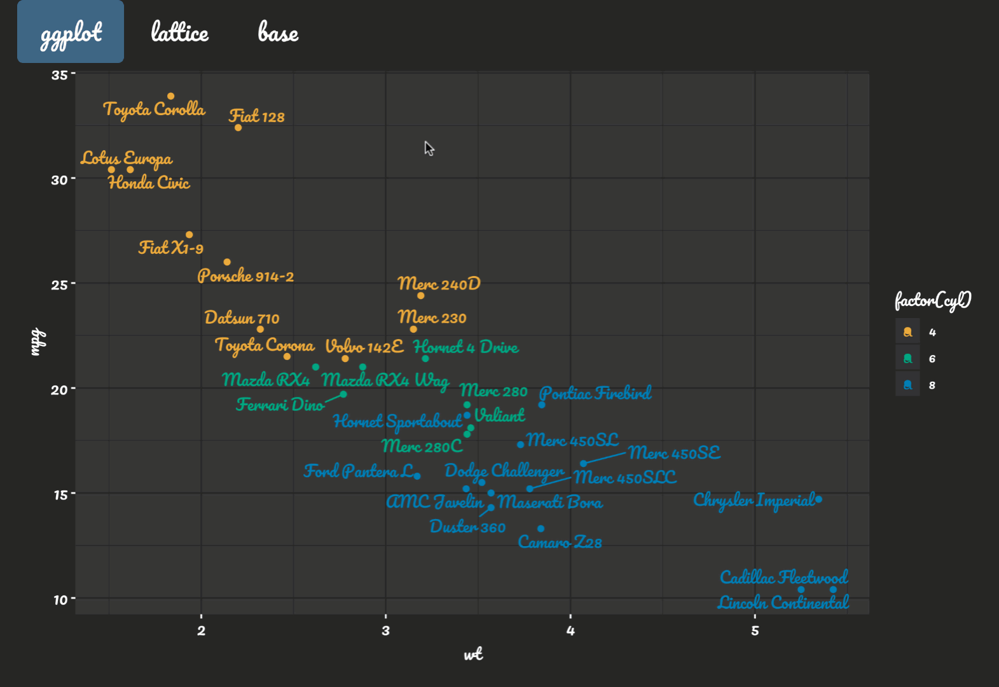

Automatic and consistent theming of ggplot2, lattice, and base graphics. In addition to automatic detection and adoption of relevant colors and fonts in shiny, rmarkdown, and RStudio, thematic also sets color-blind safe defaults for color scales.
Installation
thematic is not yet available on CRAN, but you can install it now with:
remotes::install_github("rstudio/thematic") library(thematic)
Getting started
thematic has the ability to automatically detect and intelligently apply relevant colors and fonts to R plots in various different contexts. Automatic fonts aren’t enabled by default (since they can easily fail), but you can enable with font = "auto":
thematic_on(font = "auto")
With thematic now enabled, static R plots generated via a shiny app automatically adopt the styling of their HTML container(s). For example, the shiny app below uses shinythemes and the Google Fonts API for styling the HTML; and thanks to thematic, those styles are automatically reflected in the R plots. Note that, in the case that the Pacifico font isn’t available to R, thematic will detect a lack of support, download font files via the Google Font API (unless told otherwise), cache them (see font_cache_set()), and register them for use with both showtext and ragg (one of these two packages must be installed to actually render the auto-installed fonts).
library(shiny) library(ggplot2) shinyApp( ui = fluidPage( theme = shinythemes::shinytheme("darkly"), tags$link(href="https://fonts.googleapis.com/css?family=Pacifico", rel="stylesheet"), tags$style(HTML("body{font-family: Pacifico}")), tabsetPanel(type = "pills", tabPanel("ggplot", plotOutput("ggplot")), tabPanel("lattice", plotOutput("lattice")), tabPanel("base", plotOutput("base")) ) ), server = function(input, output) { output$ggplot <- renderPlot({ ggplot(mtcars, aes(wt, mpg, label = rownames(mtcars), colour = factor(cyl))) + geom_point() + ggrepel::geom_text_repel() }) output$lattice <- renderPlot(lattice::show.settings()) output$base <- renderPlot({ image(volcano, col = thematic_get_option("sequential")) }) } )

By the way, thematic works regardless of how the shiny app is actually styled (in fact, bootstraplib, not shinythemes, will soon be our recommended way to style shiny apps). The only requirement is that, for font rendering, you must either use a Google Font (and have showtext or ragg installed) or make sure R already has the ability to render the font (which can be done manually via extrafont, showtext, or ragg).
Auto vs specified themes
Auto theming is guaranteed to work inside of a shiny runtime, but in other situations1, you may want to specify the colors and/or fonts prior to plot generation.
thematic_on( bg = "#FFFFF8", fg = "#111111", accent = "#DD1144", font = font_spec("Tangerine", scale = 2) )
library(ggplot2) ggplot(diamonds[sample(nrow(diamonds), 1000), ], aes(carat, price)) + geom_point(alpha = 0.2) + geom_smooth() + facet_wrap(~cut) + ggtitle("Diamond price by carat and cut with tufte styling")

Rendering of custom fonts
Rendering of ‘custom’ Google Fonts (i.e., Google Fonts not generally available to R) requires either the showtext or the ragg package to be installed. For Google Font rendering to work ‘out-of-the-box’ with both shiny and rmarkdown, make sure showtext is installed. If you want a plot with custom fonts outside of shiny and rmarkdown, consider using thematic_with_device() as RStudio’s graphics device currently doesn’t support custom fonts at all (if you’d like to preview the file that thematic_with_device() generates in RStudio, you can use file.show()).
If you want custom font(s) that aren’t hosted by Google Fonts, you’ll currently need to download and register them with R yourself. After downloading the font files, you can use sysfonts::font_add() (for showtext) and/or systemfonts::register_font() (for ragg) to register them with R. Another, more expensive, but more permanent (i.e., you only have to do it once, instead of everytime you start a new R session) solution to make custom fonts available to R is via extrafont::import_font() and extrafont::loadfonts().
If you have showtext installed and custom Google Font rendering still fails in rmarkdown, you can likely fix it by doing one of the following in a “setup” chunk (i.e., a knitr code chunk that appears at the top of the document which sets up chunk options defaults and other global state): 1. Include knitr::opts_chunk$set("fig.showtext" = TRUE), which enables showtext in all future code chunks. 2. Load thematic (e.g., library(thematic)), which will call knitr::opts_chunk$set("fig.showtext" = TRUE) for you.
Learn more
For more examples of thematic in action, and to gain a better understanding of how it works, see the understanding article.
- Auto theming works in rmarkdown with
runtime: shinyand also inhtml_document_base()based output formats with a non-NULLtheme(i.e., powered by bootstraplib). With time, hopefully most other rmarkdown output formats will useauto_preferences_set()(internally) so that'auto'values can work the way you’d expect them to (at least by default). Note also thataccent='auto'andfont='auto'currently doesn’t work with custom RStudio themes.